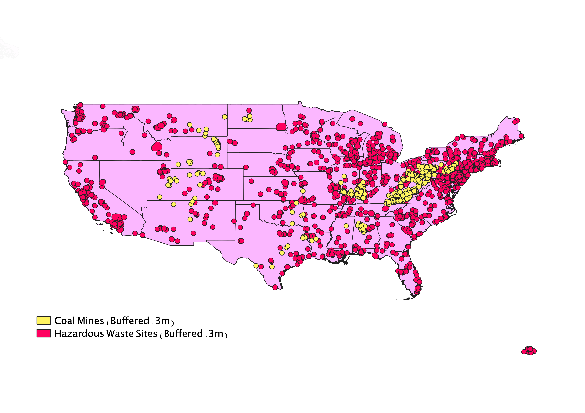

Homework 10: Geoprocessing Analysis
Reiley Baker
This map displays the intersection of hazardous waste sites and coal mines in the United States to answer the question of whether or not there is correlation between the location of coal mine sites and Superfund sites that have been contaminated with hazardous waste. The map to the left shows each coal site and hazardous waste site, along with where these points intersect. The map to the right shows only these intersections. Based on this data, there does not seem to be much correlation between the two. In regions with high concentrations of coal mines, there does not seem to be a high concentration of hazardous waste sites.
The map below shows the initial shapefile that I downloaded, which is divided into counties.

I then used the dissolve tool to combine the counties into each of the states, seen below.

Next, I added the hazardous waste sites shapefile and the coal mine sites shapefile. I used the buffer tool to add a .3 meter buffer around each point.

Lastly, I used the intersect tool to find where the hazardous waste site points and coal mine points intersected, as seen in the top two maps.
Data used for this project
Hazardous Waste Sites Shapefile Source
Coal Mines Shapefile Source
US Counties Shapefile Source